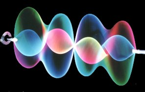

What is Visual Music?
I am an experimentalist, seeking new forms.
In this illustration, you see a spinning string vibrating in harmony, this description sounds like a musical instrument, but it is a light sculpture. The vibrating form is a superposition of the second and fourth harmonic: a 'visual chord'.
You can read more about my light sculptures in Artistic Background. At the present time I am involved in developing new uses for the computer creating 'visual music'.
Here is my understanding of three kinds of visual music.
First Kind: Visual Music is a means of converting music to images using a system or set of rules which can be implemented as a machine or computer code. There are screen savers which respond to sound, but apart from synchronisation of sound and image, what do they do? How can they express the content of the music? This idea has been around longer that either the computer or the 'sound light converter' found in night clubs. Some famous people have speculated about this, Goethe for one, and Beethoven also was known to have produced a table of equivalence between musical key and color. Beethoven and Goethe did not agree as to which color corresponded to which key and the whole process of establishing a 'sound light' relationship is an ongoing and unfulfilled activity.
Second Kind: Visual Music is a means of expressing music in visual form requiring the active involvement of an artist, designer or director to interpret the music and find the means to express it visually. This is a perhaps too fine a definition since many of the events and happenings of the 60s involved a collaboration between different forms: theatre, dance music, etc. where no single element prevailed but the performance was a kind of Visual Music. This is also where the word multimedia originated. Rock videos could be said to fall into this category but the most wonderful examples are more abstract and can be spell binding, awesome even. The presentation of a Pink Floyd concert is a perfect example of this second form .
Third Kind: Visual Music has no relationship with music as such, although it maybe viewed with or juxtaposed with music. Visual music is about creating visual relationships which change over time. It is primarily about abstract qualities of movement or changing form or color. This is the kind of visual music closest to my own sensibilities, it is perhaps the most illusive or least understood form. The earliest proponents used mechanical or optical means. The Whitney Brothers started making what would now look like psychedelic (before the word had been invented) animation's in the 50s and 60s. The first great creation of Visual Music to receive widespread notice by the public was the Stargate sequence in the movie 2001. In the 70s, artists like Tom DeWitt and Richard Monkhouse started creating special analogue electronic 'image synthesisers'. More recently with the advent of desk top computers, there has been an explosion of activity in this area. But much of this work is animation which is restricted by the time consuming nature of its creation (even on a computer) and the fact that it must have a beginning, middle and end where as I prefer a form without time limits, where you can watch for a minute or an hour, it all depends on your state of mind.
The term experimental is used in art to indicate working with new forms. With the Spinning String Light Sculptures I had found a much closer connection to the concept of experiment in physics, the experiment exists in a specific relationship with the process of theory making and testing.
Here is a suggestion of Visual Music as an experimentally testable art form, but what then is my theory? It is that aesthetic experience, art, beauty, whatever it is to be called is much closer to science because they share a common purpose: To explain and provide understanding. Physics is about physical forces, art is about mental forces. Einstein observed that a theory needs to be expressed elegantly. A beautiful equation is more powerful because it can be worked with more effectively. Its elegance gives it utility: Form follows Function was a founding principle of modernism and although we live in a post modern age, the lessons taught by modernists are still relevant, particularly when considered in the abstract. This is not about style or functionality, at issue is the underlying common nature of science and art. In this context, Visual Music is a heuristic which throws 'light' on the subject.
The observation that art and science share a common purpose is not new, Leonardo DaVinci would have said much the same and even at the dawn of history Pythagoras declared that numbers were the underlying structure of everything. However this is not a matter of repackaging classical concepts in a contemporary context. Our understanding of the scientific method has undergone a paradigm shift within the last generation. Science is no longer perceived as seeking immutable truths, its method uses human imagination, searching for 'models', which explain and provide understanding. Scientific theories (or models) may not resemble art works but they are creations of the human mind and are subject of strong feelings within the scientific community. While orthodox theories are taught 'as if true', new theories always come along to upset the established truths in a way which mirrors the development of art. This insight has yet to be fully appreciated by the scientific community, let alone the World at large. It is important for artists to understand this, both out of intellectual curiosity and because it is directly relevant to the their own creative process. We are all engaged in a common creative pursuit.
Pythagoras conviction that the universe was made of numbers took its inspiration from music. The Greeks understood the principles of harmony and those principles remained unchanged until the arrival of the tempered scale which was a revolution as radical as Relativity overturning Classical Mechanics. In the 20 th century minimalists composers have used mathematical methods for a new purpose. They used the formalities of maths to create a new kind of music which does not repeat: "generative music". Recently this method has been used for creating music automatically. With the software Koan, a composer ( or a non specialist ) defines rules which Koan then interprets. Various Koan pieces, including several I composed, are used as accompaniment to this site. ( If you are not listening to Koan music now, go to Links for information on how to download Koan plug - in. Brian Eno is an enthusiastic proponent of Koan. (He has also shown interest in my visual art.) One of the interesting technical features of Koan pieces are that they are extremely small, a file of a few Kilobytes is sufficient to define a complex set of rules for Koan to interpret. I have also used mathematics in creating the drawing tools for Zip Art. (see below ) Again there is a great saving of disc space, an animation 'log' can be recorded in Zip Art which is a tiny fraction of the size of a conventional animation file.
The use by artists and musicians of science and mathematics, "The Scientific Method", is a step towards greater power. The purpose of science is to explain and provide understanding but science is much more than a dry process of reasoning, over and over again it has amazed us and transformed our lives. For art to throw more light on the human condition this will be achieved by a combination of passion and reason... although much of the reasoning may be hidden in the finished artwork. Our eyes, minds and hearts will be opened to the fullest by the new experience. The potential is there, we will be more than surprised by the results. Unpredictable, but I hazard the guess that the deepening fusion of art and science will not be artists in white lab coats, quite the contrary, we shall be moved from disbelief to be overwhelmed and astonished by the vision of the future that will unfold.
The drawing tools are mathematical algorithms incorporating sines and cosines. They are encapsulated so that the user need know nothing about mathematics. Instead there is the 'magic' of not selecting one color but a whole finely blended range which is painted onto the screen. You are not limited to drawing a line but instead draw complex forms which you control the size and proportions of with your mouse. Some of the illustrations on this web site have been created with Zip Art, go to Gallery Guide for a selection of larger images. Until I become a Java wizard, I cannot show you more moving 'Visual Music of The Third Kind' on the web site but if you go to Java Zip, you will find an interactive applet which gives you a selection of special drawing tools to try. (Warning! Only click on Java Zip if you are using a Java compatible browser such as Netscape 3.)
Paul Friedlander praskovi@clara.net
You can download a trial version of ZIP ART for Windows free.
Download Now ZIP file format, 800 KB.
home page
| Zip Art
| gallery guide
| Artistic Background